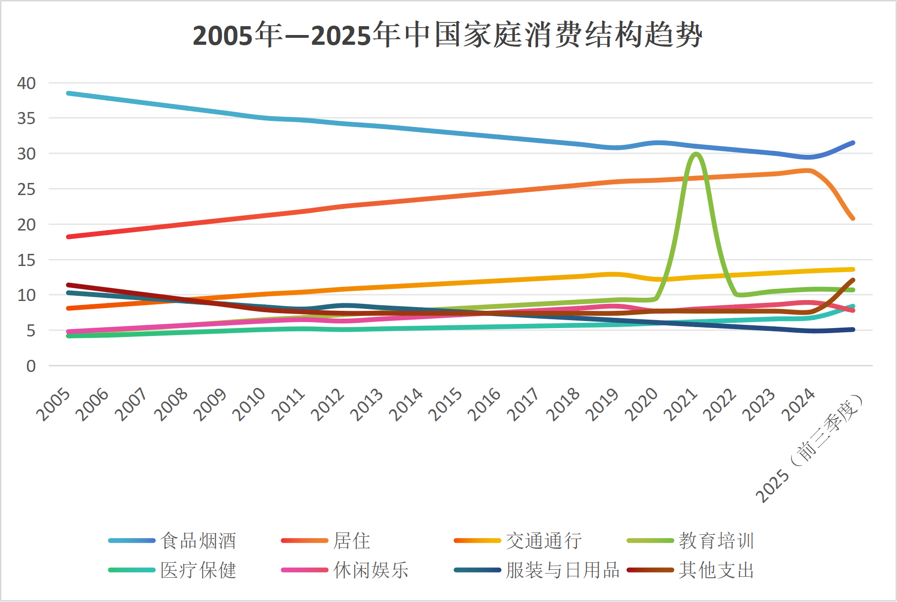
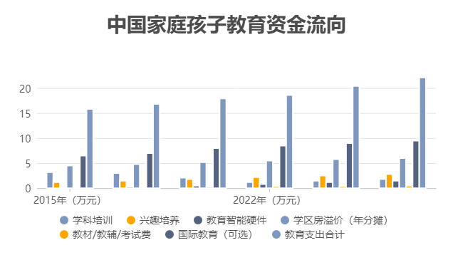
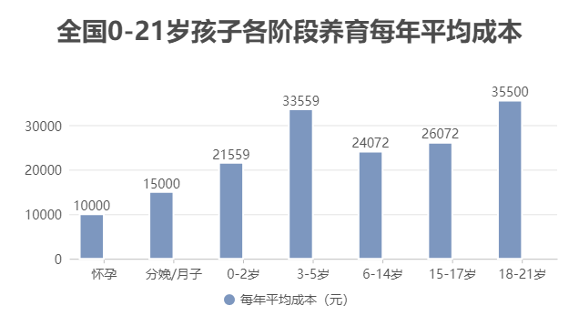
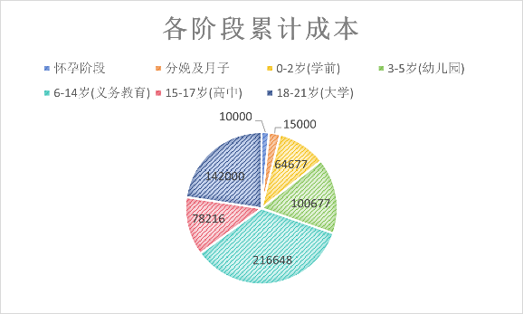
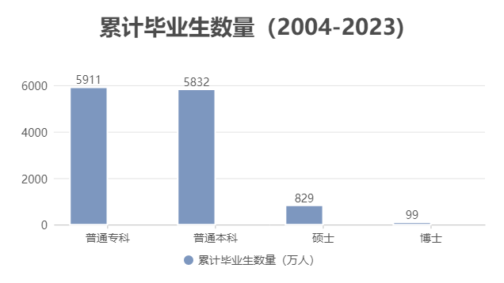
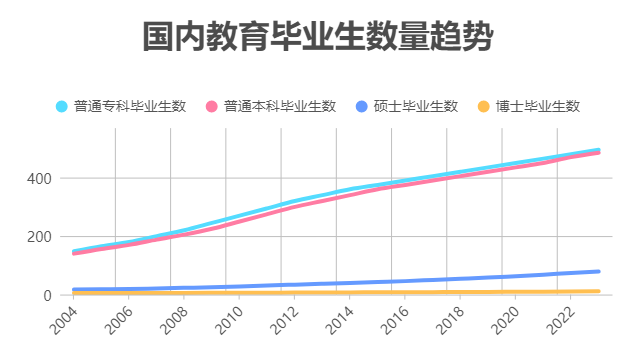

引言
从“单独二孩”到“全面三孩”，国家的政策工具箱不断开启，以期唤醒一场生育热情。然而，数据的回声却沉入了一片看似沉默的广场——出生人口数量持续探底，年轻人的讨论区充满了“不婚不育保平安”的戏谑。
为什么慷慨的“政策红包”，却难以兑换成真实的“生育意愿”？
本报告试图潜入这片沉默的深海，揭开生育抉择背后那座巨大的“冰山”。我们发现，水面之上的政策激励，只是冰山一角；真正决定性的力量，深藏于水面之下——那是经济理性的精密计算、文化镜像的悄然重塑，与生命价值的根本性重构。

生育过程中的显性与隐性成本
第一部分：冰山之上——政策与现实的“鸿沟”
政策红包vs.养育成本巨峰
当我们将几个代表性地区的最高生育补贴，与一个孩子从0岁至18岁的估算养育成本并置时，一个巨大的鸿沟赫然显现。

中国城乡生育成本与国际对比（数据来源：《中国生育成本报告2024》）
中国城乡生育成本（0-17岁）以人均GDP倍数衡量，不仅远高于美国、日本等发达国家，且城镇生育成本显著高于农村；无论城乡，生育成本均随孩次增加呈递减趋势，但即便农村三孩的27.7倍，也远超国际最高的日本4.26倍，中国整体生育成本的人均GDP倍速（6.3）同样大幅高于国际水平。

生育成本国际对比（数据来源：《中国生育成本报告2024》）
这并非否定政策的努力，而是揭示了一个残酷的现实：一次性的补贴，在持续十余年、高达百万的刚性支出面前，如同向一片广袤的干旱土地洒下一杯水，瞬间蒸发，难以解渴。政策的“痛点”未能触及生活的“痛处”。
第二部分：冰山之中——压垮意愿的“三座大山”
家庭消费结构的“变脸”
回顾过去二十年，中国城镇家庭的消费图谱发生了剧烈“变脸”。代表“三座大山”的教育、医疗、居住（房贷/房租）支出占比持续扩张，如同一张不断拉满的弓，而衣食行等基本生活开支的占比则被相应挤压。

生育意愿影响因素（数据来源：百度文库）

2005-2025年中国家庭消费结构变化（数据来源：百度文库）
2005-2025年，中国家庭消费结构持续升级：食品烟酒占比下降、居住占比上升后趋稳，教育培训呈阶段性波动，交通、医疗和休闲娱乐占比稳步提高，服装与日用品等传统消费占比整体下降，消费重心逐步向生活品质和精神需求倾斜。这不仅仅是数字的变化，更是生活重心的迁移。家庭预算正在被生存与发展的焦虑所主导，用于抚育新生命的“情感与财务空间”被大幅挤占。当一个家庭的经济弹性消失，生育便从一种情感渴望，退行为一项高风险的财务决策。
教育内卷的“无底洞”
跟随一个典型中产家庭的教育资金流向，我们能看到一条清晰的“内卷”路径。资金如溪流汇入江河，猛烈地灌入学科培训、兴趣培养、学区房（隐性成本）、夏令营/游学等各个赛道。

中产家庭教育资金流向（数据来源：百度文库）
教育，这本应是托举未来的力量，在实践中却异化成一个吞噬巨额资金与家庭精力的“黑洞”。父母们被迫卷入一场没有终点的军备竞赛，这种对未来的巨大不确定性和投入恐惧，成为了压垮生育意愿最核心的那根稻草。
各阶段年均养育成本（元）
数据来源：育娲人口研究
各阶段累计养育成本（元）
数据来源：育娲人口研究
2004-2023年累计毕业生数量（万人）
数据来源：国家统计局
而更让家庭陷入焦虑的是，高成本的教育投入还遭遇了学历贬值的现实冲击——2004-2023年普通专科、本科毕业生累计分别达5911万人、5832万人，硕士、博士毕业生累计也有829万、99万，高等教育从精英化快速转向大众化，本专科学历早已从就业市场的“稀缺资源”沦为“基础门槛”，硕士学历的竞争优势也大幅弱化。
从养育成本来看，孩子0-21岁的成长过程中，仅大学阶段年均投入就达35500元，幼儿园阶段也需33559元，6-14岁义务教育阶段累计成本占比更是高达17.27%，家庭为教育砸下的真金白银持续攀升。但这份高投入却未能换来对等的学历价值：海量本专科毕业生扎堆基础岗位，硕士学历求职的薪资溢价、岗位层级优势持续收窄，即便是累计仅99万的博士学历，在科研、高校等核心领域也出现竞争加剧的情况。教育投入与学历回报的严重失衡，让家庭在生育决策时更添顾虑——当“养娃”意味着投入高昂成本却难换学历的实际价值，生育的动力自然被进一步消解。
第三部分：冰山之下——观念与文化的“暗流”
媒体如何塑造我们的“想象”？
在社交媒体关于“低欲望社会”、“不婚不育”的讨论中，“躺平”、“压力”、“自由”、“孤独”、“自我”等词汇高频涌现，构成了一幅复杂的当代青年心态地图。情感分析显示，其中交织着对现实的无奈、对自由的向往，以及对个人空间的坚决捍卫。

当代青年生育心态关键词云（数据来源：社交媒体分析）
来自外部的文化概念（如日本的“低欲望社会”），通过媒体不断传播，为本土青年的无力感提供了命名和归属。它不再是个体的偶然情绪，而是一种被广泛讨论和认同的群体心态，悄然重塑着一代人的集体选择。
生死观的古今之变
传统范式
以“家族传承”为轴心，生命的意义在血脉延续、四世同堂、光宗耀祖中得以确认。
现代范式
以“个人实现”为核心，生命的价值在探索世界、发展爱好、滋养友谊、经营个人舒适与社会贡献中充分体现。
这是一场静默而深刻的革命。当“为我而生”的价值感超越“为家族而活”的使命感，生育便从一项默认的生物本能与文化义务，转变为众多人生选项中的一种。养老金、保险、朋友社群和个人兴趣，共同构成了传统“养儿防老”之外新的、可靠的安全网。
现实案例洞察

不婚生育的勇敢实践者：李雪珂
34岁的山东创业者李雪珂，经济与精神双重独立，在未遇到契合伴侣的情况下，选择远赴泰国通过试管婴儿技术生下中英混血三胞胎，成为国内较早公开不婚生育选择的女性之一。
她每年为孩子投入超过200万元，独自扛起养育重任，用“双倍精力”弥补孩子成长中的角色缺失。
“爱从来没有固定的形式，我既能给孩子细腻的母爱，也能学着做他们的‘超级老爸’。”
她的选择印证了现代女性在生育决策上的自主权利，也揭示了不婚生育需要的经济底气和强大内心。

丁克生活的坚定选择：鲁翊岚夫妇
成都的鲁翊岚夫妇婚后十年坚定选择丁克，将时间与金钱投入二人世界，自驾露营、公益活动、出国旅行，把生活过得充实而有意义。
他们通过足额缴纳养老保险、配置商业保险、定期储蓄等方式，构建了多元的养老保障体系，替代了“养儿防老”的传统模式。
“婚姻的核心价值是两个人的相知相守、彼此陪伴，而非完成生育的‘任务’。”
他们的选择获得了父母的理解与接纳，折射出养老方式从“依赖子女”到“多元保障”的深刻变革。

当代青年生育观念调查（数据来源：调查问卷）
结语
我们的探查表明，低生育率并非年轻人任性或自私的结果，而是在当前经济结构、文化氛围与价值系统共同作用下的一种理性且深刻的应对。
因此，解决方案必须超越简单的“催生”逻辑，转向构建一个真正“友好”的生态系统：
从“现金补贴”到“系统减负”
推动住房、教育、医疗领域的深层改革，切实降低生活成本。
从“女性责任”到“共同分担”
通过强制性男性育儿假、完善普惠托育等，打破“母职惩罚”。
从“家庭牺牲”到“社会支持”
塑造尊重个人选择、鼓励家庭责任共担的社会文化。
唯有当政策的触角，能够穿透冰山的表层，真正理解并回应那深藏于下的经济重压与文化暗流，才能孕育出真正的“生有所愿”。这需要的不仅是资金，更是观念的革新与系统的智慧。